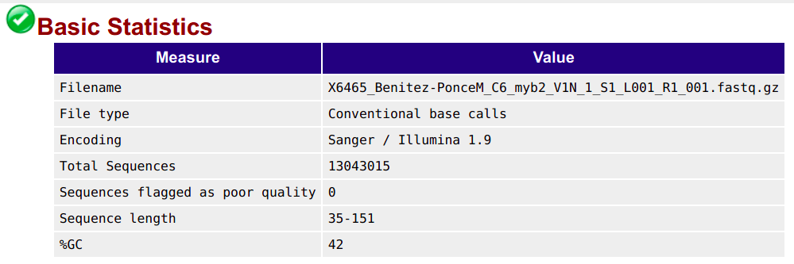

Read QC & preprocessing
Introduction
The first series of steps our bacterial whole-genome analysis workflow concerns the quality control (QC) & “preprocessing†of the reads.
The QC part will leave the data untouched, whereas the preprocessing involved the removal of unwanted bits of sequence. After the preprocessing, we will still have FASTQ files, just with somewhat less content.
We will preprocess our reads with the following steps:
- QC with FastQC
- Summarizing FastQC results with MultiQC
- Removing adapters and low-quality bases from our reads with TrimGalore
{{< fa user-edit >}} Setting up
Start a new VS Code session with an open terminal:
Log in to OSC’s OnDemand portal at https://ondemand.osc.edu.
In the blue top bar, select
Interactive Appsand then near the bottom of the dropdown menu, clickCode Server.In the form that appears on a new page:
- Select OSC project
PAS2250 - The starting directory:
/fs/scratch/PAS2250/cabana/<user> Number of hours:10- Click
Launch.
- Select OSC project
On the next page, once the top bar of the box has turned green and says
Runnning, clickConnect to VS Code.Open a Terminal by clicking {{< fa bars >}} =>
Terminal=>New Terminal.In the terminal, move into your
bact/bactdir:cd bact/bact # Full path: /fs/scratch/PAS2250/cabana/$USER/bact/bactOptional: open a file to save your commands. In the Explorer (file browser) on the left, you should be able to find the
workflow.shscript you created yesterday.
1 The FASTQ format
FASTQ is a very common output format of high-throughput sequencing machines — at least from Illumina sequencing, you will almost always receive the sequences in this format. Like most genomic data files, these are plain text files, and each sequence that is read by the sequencer (i.e., each “read”) forms one FASTQ entry represented by four lines. The lines contain, respectively:
- A header that starts with
@and e.g. uniquely identifies the read - The sequence itself
- A
+(plus sign) - One-character quality scores for each base in the sequence

The header line is annotated, with some of the more useful components highlighted in red.
For viewing purposes, this read (at only 56 bp) is shorter than what is typical.
The “Q†in FASTQ stands for “quality”, to contrast this format with FASTA, a more basic and generic format that does not include base quality scores. FASTQ files have the extension .fastq or .fq, but they are very commonly gzip-compressed, in which case their name ends in .fastq.gz or .fq.gz.
The quality scores we saw in the read above represent an estimate of the error probability of the base call. Specifically, they correspond to a numeric “Phred†quality score (Q), which is a function of the estimated probability that a base call is erroneous (P):
Q = -10 * log10(P)
For some specific probabilities and their rough qualitative interpretations for Illumina data:
| Phred quality score | Error probability | Rough interpretation | ASCII character |
|---|---|---|---|
| 10 | 1 in 10 | terrible | + |
| 20 | 1 in 100 | bad | 5 |
| 30 | 1 in 1,000 | good | ? |
| 40 | 1 in 10,000 | excellent | ? |
This numeric quality score is represented in FASTQ files not by the number itself, but by a corresponding “ASCII character†(last column in the table). This allows for a single-character representation of each possible score — as a consequence, each quality score character can conveniently correspond to (& line up with) a base character in the read. (For your reference, here is a complete lookup table — look at the top table, “BASE=33”).
2 Our FASTQ files
2.1 Listing your FASTQ files
First, let’s take another look at your list of FASTQ files:
ls -lh data/fastqtotal 6.1G
-rw-r--r-- 1 jelmer PAS2250 205M Feb 4 11:47 SM04_R1.fastq.gz
-rw-r--r-- 1 jelmer PAS2250 242M Feb 4 11:46 SM04_R2.fastq.gz
-rw-r--r-- 1 jelmer PAS2250 188M Feb 4 11:46 SM1030_R1.fastq.gz
-rw-r--r-- 1 jelmer PAS2250 221M Feb 4 11:46 SM1030_R2.fastq.gz
-rw-r--r-- 1 jelmer PAS2250 187M Feb 4 11:46 SM1031_R1.fastq.gz
-rw-r--r-- 1 jelmer PAS2250 221M Feb 4 11:46 SM1031_R2.fastq.gz
-rw-r--r-- 1 jelmer PAS2250 187M Feb 4 11:46 SM1038_R1.fastq.gz
-rw-r--r-- 1 jelmer PAS2250 224M Feb 4 11:46 SM1038_R2.fastq.gz
# [...output truncated...]As we discussed yesterday, in the file listing above:
- The files all have a
.gzextension, indicating they have been compressed with the gzip utility. - There are two files per sample:
_R1(forward reads) and_R2(reverse reads).
2.2 Paired-end data
As mentioned, we’ll be working with paired-end (PE) Illumina sequencing data. Therefore, we have two files for each sequenced sample:
- The file with forward reads has
_R1(or sometimes_1) in its name, e.g.SM04_R1.fastq.gz - The file with reverse reads has
_R2(or sometimes_2) in its name, e.g.SM04_R2.fastq.gz
(i.e., the file name should be identical to that for the forward read, except for the read direction identifier).
2.3 Viewing FASTQ files
Next, we’ll take a peak inside one of these FASTQ files.
Basic commands to view files
Let’s consider our options to look inside one of these files:
catprints the entire contents of a file to screen — probably not a good idea for such a large file.headandtailprint just the first and last lines of a file, respectively, which could perhaps be a good start?
Let’s try to print 8 lines, which should show us two reads:
head -n 8 data/fastq/SM04_R1.fastq.gz�
Խے�8�E��_1f�"�QD�J��D�fs{����Yk����d��*��
|��x���l޴�j�N������?������ٔ�bUs�Ng�Ǭ���i;_��������������|<�v����3��������|���ۧ��3ĐHyƕ�bIΟD�%����Sr#~��7���1y�Ai,4
w\]"b�#Q����8��+[e�3d�4H���̒�l�9LVMX��U*�M����_?���\["��7�s\<_���:�$���N��v�}^����sw�|�n;<�<�oP����
i��k��q�ְ(G�ϫ��L�^��=��<���K��j�_/�[ÛV�ns:��U��G�z�ݎ�j����&��~�F��٤ZN�'��r2z}�f\#��:�9$�����H�݂�"�@M����H�C�
�0�pp���1�O��I�H�P�.Ȣe��Q�>���
�'�;@D8���#��St�7k�g��|�A䉻���_���d�_c������a\�|�_�mn�]�9N������l�٢ZN�c�9u�����n��n�`��
"gͺ�
���H�?2@�FC�S$n���Ԓh� nԙj��望��f �?N@�CzUlT�&�h�Pt!�r|��9~)���e�A�77�h{��~�� ��
# [...output truncated...]Ouch! 😳 What went wrong here? (Click for the solution)
What happened here is that we are directly seeing the contents of the compressed file, which is simply not human-readable.
To get around this, we might be inclined to uncompress these files, which we could do with the gunzip command. However, uncompressed files take up several times as much disk storage space as compressed ones.
Fortunately, we don’t need to decompress them: - Almost any bioinformatics tool will accept compressed FASTQ files. - We can still view these files in compressed form, as shown below.
The less pager
Here, we’ll use the less command, which will automatically display gzip-compressed files in human-readable form — let’s try it:
less -S data/fastq/SM04_R1.fastq.gzless -S (Click to expand)
Depending on your zoom level and the length of reads in your FASTQ file, some lines may contain too many characters to fit on your screen. If that’s the case, less will by default “wrap†those lines onto the next line on your screen, so characters won’t run off the screen on the right-hand side.
That may be useful when the file contains text you’re trying to read in full, but it is often confusing for files like FASTQ as well as for tabular files. That’s why we turned off line-wrapping with the -S option.
{{< fa user-edit >}} Exercise: Explore the file with less
less doesn’t print stuff to screen but instead opens it in a “pager”. After running the command above, you should be viewing the file inside the less pager.
You can move around in the file in several ways: by scrolling with your mouse, with up and down arrows, or, if you have them, PgUp and PgDn keys (also, u will move up half a page and d down half a page).
If you find yourself scrolling down and down to try and reach the end of the file, you can instead press G to go to the very end right away (and g to go back to the top).
Notice you won’t get your shell prompt back until you press q to quit less.
3 Running FastQC
3.1 Intro to FastQC
FastQC is a ubiquitous tools for quality control of FASTQ files. Running FastQC or a similar program is the first step in nearly any high-throughput sequencing project. FastQC is also a good first example of a tool with a command-line interface.
For each FASTQ file, FastQC outputs an HTML file that you can open in your browser with about a dozen graphs showing different QC metrics. The most important one is the per-base quality score graph shown below.


3.2 Building our FastQC command
To run FastQC, we can use the command fastqc.
If you want to analyze one of your FASTQ files with default FastQC settings, a complete FastQC command to do so would simply be fastqc followed by the name of the file:
# (Don't run this)
fastqc data/fastq/SM04_R1.fastq.gzHowever, an annoying FastQC default behavior is that it writes its output files in the dir where the input files are — in general, it’s not great practice to directly mix your primary data and results like that!
To figure out how we can change that behavior, first consider that many commands and bioinformatics tools alike have an option -h and/or --help to print usage information to the screen.
Let’s try that:
fastqc -hbash: fastqc: command not found...However, there is a wrinkle, as you can see above. While FastQC is installed at OSC1, we have to “load it†with the module load command before we can use it.
However, we will be using a whole array of bioinformatics programs, and we are going to use a (nearly) one-stop solution: a so-called “Conda environment†that has all of those programs installed.
We won’t have time to get into this now, but you want to learn more about Conda / software usage at supercomputers, see this reference page elsewhere on the website.
Here’s how we can load that Conda software environment — we first load OSC’s (mini)conda installation, and then we can load (“activate”) the Conda environment that I created for you:
module load miniconda3
source activate /fs/ess/PAS0471/jelmer/conda/cabana{{< fa user-edit >}} Exercise: FastQC help and output dir
Again try to print FastQC’s help info, and figure out which option you can use to specify a custom output directory.
Click for the solution
fastqc -h and fastqc --help will both work to show the help info.
You’ll get quite a bit of output printed to screen, including the snippet about output directories that is reproduced below:
fastqc -h -o --outdir Create all output files in the specified output directory.
Please note that this directory must exist as the program
will not create it. If this option is not set then the
output file for each sequence file is created in the same
directory as the sequence file which was processed.So, you can use -o or equivalently, --outdir to specify an output dir.
With the added --outdir (or -o) option, let’s try to run the following FastQC command:
fastqc \
--outdir results/fastqc_pretrim \
data/fastq/SM04_R1.fastq.gzSpecified output directory 'results/fastqc_pretrim' does not exist\
Above, I spread the command across multiple lines, which makes it a little easier to read. You can run the command exactly like that: we use the backslashes (\) at the end of all but the last line to indicate to the shell that our command will continue on the next line.
{{< fa user-edit >}} Exercise: Fixing the FastQC error
Now what is going on this time? 😨 Or had you perhaps seen this coming given the help text we saw earlier? At any rate, can you try to fix the problem?
Click here for a hint
You’ll need to create a new directory, which you can do either by using the buttons in the VS Code side bar, or with the mkdir command — here, try it as mkdir -p followed by the name (path) of the directory you want to create.
Click here for the solution
The problem, as the error fairly clearly indicates, is that the output directory that we specified with
--outdirdoes not currently exist. We might have expected FastQC to be smart/flexible enough to create this dir for us (many bioinformatics tools are), but alas. On the other hand, if we had read the help text clearly, it did warn us about this.With the
mkdircommand, to create “two levels†of dirs at once, like we need to here (bothresultsand thenfastqcwithin there), we need its-poption:
mkdir -p results/fastqc_pretrimAnd for our final try before we give up and throw our laptop out of the window (make sure to run the code in the exercise solution before you retry!):
fastqc \
--outdir results/fastqc_pretrim \
data/fastq/SM04_R1.fastq.gzapplication/gzip
Started analysis of SM04_R1.fastq.gz
Approx 5% complete for SM04_R1.fastq.gz
Approx 10% complete for SM04_R1.fastq.gz
Approx 15% complete for SM04_R1.fastq.gz
[...truncated...]
Analysis complete for SM04_R1.fastq.gzSuccess!! 🎉
3.3 FastQC output files
Let’s take a look at the files in the output dir we specified:
ls -lh results/fastqc_pretrimtotal 1.2M
-rw-r--r-- 1 jelmer PAS0471 713K Feb 4 14:02 SM04_R1_fastqc.html
-rw-r--r-- 1 jelmer PAS0471 431K Feb 4 14:02 SM04_R1_fastqc.zip- There is a
.zipfile, which contains tables with FastQC’s data summaries - There is an
.html(HTML) file, which contains plots — this is what we’ll look at next
{{< fa user-edit >}} Exercise: Another FastQC run
Run FastQC for the corresponding R2 FASTQ file. Would you use the same output dir?
Click for the solution
Yes, it makes sense to use the same output dir, since as you could see above, the output file names have the input file identifiers in them. As such, we don’t need to worry about overwriting files, and it will be easier to have all the results in a single dir.
To run FastQC for the R2 (reverse-read) file:
fastqc \
--outdir results/fastqc_pretrim \
data/fastq/SM04_R2.fastq.gzStarted analysis of SM04_R2.fastq.gz
Approx 5% complete for SM04_R2.fastq.gz
Approx 10% complete for SM04_R2.fastq.gz
Approx 15% complete for SM04_R2.fastq.gz
[...truncated...]
Analysis complete for SM04_2.fastq.gzls -lh results/fastqc_pretrim-rw-r--r-- 1 jelmer PAS0471 241K Jan 21 21:50 SM04_R1_fastqc.html
-rw-r--r-- 1 jelmer PAS0471 256K Jan 21 21:50 SM04_R1_fastqc.zip
-rw-r--r-- 1 jelmer PAS0471 234K Jan 21 21:53 SM04_R2_fastqc.html
-rw-r--r-- 1 jelmer PAS0471 244K Jan 21 21:53 SM04_R2_fastqc.zipNow, we have four files: two for each of our preceding successful FastQC runs.
4 Interpreting FastQC output
4.1 FastQC HTML modules
We’ll now go through a couple of the FastQC plots/modules, with first some example plots2 with good/bad results for reference.
Overview of module results
FastQC has “pass†(checkmark in green), “warning†(exclamation mark in orange), and “fail†(cross in red) assessments for each module, as you can see below.
These are handy and typically at least somewhat meaningful, but it is important to realize that a “warning†or a “fail†is not necessarily the bad news that it may appear to be, because, e.g.:
- Some of these modules could perhaps be called overly strict.
- Some warnings and fails are easily remedied or simply not a very big deal.
- FastQC assumes that your data is derived from whole-genome shotgun sequencing — some other types of data like RNA-seq data will always trigger a couple of warnings and files based on expected differences.
Basic statistics
This shows, for example, the number of sequences (reads) and the read length range for your file:

Per base quality sequence quality
This figure visualize the mean per-base quality score (y-axis) along the length of the reads (x-axis). Note that:
- A decrease in sequence quality along the reads is normal.
- R2 (reverse) reads are usually worse than R1 (forward) reads.
Good / acceptable:
Bad:
To interpret the quality scores along the y-axis, note the color scaling in the graphs (green is good, etc.), and see this table for details:
| Phred quality score | Error probability | Rough interpretation |
|---|---|---|
| 10 | 1 in 10 | terrible |
| 20 | 1 in 100 | bad |
| 30 | 1 in 1,000 | good |
| 40 | 1 in 10,000 | excellent |
Per sequence quality scores
This shows the same quality scores we saw above, but now simply as a density plot of per-read averages, with the quality score now along the x-axis, and the number of reads with that quality score along the y-axis:
Good:

Bad:

Sequence length distribution
Will throw a warning as soon as not all sequences are of the same length (like below), but this is quite normal.

Adapter content
Checks for known adapter sequences. When some of the insert sizes are shorter than the read length, adapters can end up in the sequence – these should be removed!
Good:

Bad:
4.2 Checking your FastQC results
First, you’ll unfortunately have to download FastQC’s output HTML files to your computer:
- Find the FastQC HTML files in the file explorer in the VS Code side bar.
- Right-click on one of them, click
Download...and follow the prompt to download the file somewhere to your computer (doesn’t matter where). - Repeat this for the second file
- Then, open your computer’s file browser, find the downloaded files, and double-click on one. It should be opened in your default web browser.
{{< fa user-edit >}} Exercise: Interpreting your FastQC results
Open the HTML file for the R1 FASTQ file and go through the modules we discussed above. Can you make sense of it? Does the data look good to you, overall?
Now open the HTML file for the R2 FASTQ file and take a look just at the quality scores. Does it look any worse than the R1?
5 Summarizing QC results with MultiQC
Here are some challenges you may run into after running FastQC:
When you have many FASTQ files, you’ll generate a lot of FastQC HTML files to sort through. Our dataset is small with only 16 samples, but this still means 32 FastQC outputs. Other datasets may easily have dozens or even hundreds of samples, in which case checking all of the output becomes a very unpleasant task.
Even if you do diligently go through each file, it’s not that easy to compare samples, since they are not drawn in the same graphs.
MultiQC addresses these problems as it aggregates FastQC results from many files, and summarizes them into a single HTML file with (still) one graph per FastQC module.
And while MultiQC is most widely used for FastQC aggregation, it can recognize and process the (often “log”-type) output of dozens of bioinformatics tools, including several others that we will be using.
MultiQC’s graphs are also interactive, but here is a static example:

5.1 Running MultiQC
To run MultiQC, use the command multiqc. Let’s start by running it with the --help option:
multiqc --help
# (Only the top part of the output is shown in the screenshot below)
As the first couple of help lines in the paler gray color explain, MultiQC will search the [ANALYSIS DIRECTORY], a dir that we pass to it as an argument at the end of the command line.
That is, if we tell MultiQC about the results/fastqc_pretrim directory like so, it should find and then aggregate all the FastQC results in there:
# (Don't run this - we'll complete the command in a second)
multiqc /fs/scratch/PAS2250/cabana/bact_results/fastqc_pretrimThe default output directory of MultiQC is the current working directory, so just like with FastQC, we do want to use that option as well3:
# Run MultiQC to summarize the FastQC results
multiqc \
--outdir results/multiqc_fastqc \
/fs/scratch/PAS2250/cabana/bact_results/fastqc_pretrim
5.2 MultiQC output
Then, you should have some files in the output dir:
ls -lh results/multiqc_fastqctotal 1.7M
drwxr-xr-x 2 jelmer PAS2250 4.0K Feb 4 14:57 multiqc_data
-rw-r--r-- 1 jelmer PAS2250 1.7M Feb 4 14:57 multiqc_report.htmlGo ahead and find the HTML file in VS Code’s file browser, right-click on it and then download it to your computer, and click on the file in your own computer to open it in your browser (i.e., just like we did with the FastQC output).
{{< fa user-edit >}} Exercise: Explore the MultiQC results
Check for example whether patterns are consistent across samples, or if there are any outliers.
6 Trimming with TrimGalore
We will run TrimGalore to filter our FASTQ files, removing:
- Any adapter sequences that may be present in the reads
- Poor-quality bases at the start and end of the reads
- Very short reads (in most cases made short by the prior two steps)
Several largely equivalent tools exist for this kind of FASTQ preprocessing — Trimmomatic and fastp are two other commonly used ones. (And TrimGalore itself is mostly a wrapper around another tool called CutAdapt.)
Two advantages of of TrimGalore are that it will auto-detect the adapters that are present in your reads (e.g., different library prep protocols use different adapters), and that it can automatically run FastQC on the processed sequences.
Unfortunately, we’ll first have to switch Conda environments for TrimGalore:
source activate /fs/ess/PAS0471/jelmer/conda/trimgalore6.1 Running TrimGalore
We will run TrimGalore for one sample, but because we have paired-end reads:
- We’ll specify two FASTQ file names: one with the forward (R1) reads, and one with the reverse (R2) reads.
- We’ll have to use the
--pairedoption (see the box below for details if you’re interested)
When we have paired-end reads, much of the trimming happens separately for the R1 (forward) and R2 (reverse) files, but at the end of the run, TrimGalore will make sure that every R1 read still has its R2 counterpart, and vice versa.
However, we have to use the --paired option for this: without it, TrimGalore will only process the R1 and R2 files separately, and omit the final step where it removes orphaned reads.
With the --paired option, any “orphaned†reads will by default be removed, because R1 and R2 files for the same samples always need to contain all the same reads. (TrimGalore does have an option to retain these orphaned reads into separate files, but we won’t use that.)
So far, our command looks like this:
# (Don't run this)
trim_galore \
--paired \
data/fastq/SM04_R1.fastq.gz \
data/fastq/SM04_R2.fastq.gzIn terms of other TrimGalore options:
- Use the default settings for adapters (auto-detection and removal) and the base quality threshold (a Phred score of 20)
- Use a longer read length (36 bp) than the default of 36 bp:
--length 36. - Specify the output directory4:
--output_dir results/trimgalore. - Have TrimGalore run FastQC for us on the filtered FASTQ files, so we can e.g. check if adapters were successfully removed.
You might also want to run TrimGalore with the --help option to learn how to run it:
trim_galore --help
# Note: Below I am only showing (truncated) output for the key options! USAGE:
trim_galore [options] <filename(s)>
--paired This option performs length trimming of quality/adapter/RRBS trimmed reads for
paired-end files.
-o/--output_dir <DIR> If specified all output will be written to this directory instead of the current
directory. If the directory doesn't exist it will be created for you.
--fastqc Run FastQC in the default mode on the FastQ file once trimming is complete.
--fastqc_args "<ARGS>" Passes extra arguments to FastQC.
-a/--adapter <STRING> Adapter sequence to be trimmed. If not specified explicitly, Trim Galore will
try to auto-detect whether the Illumina universal, Nextera transposase or Illumina
small RNA adapter sequence was used.
-q/--quality <INT> Trim low-quality ends from reads in addition to adapter removal.
--length <INT> Discard reads that became shorter than length INT because of either
quality or adapter trimming. A value of '0' effectively disables
this behaviour. Default: 20 bp.A final test command to run TrimGalore on our actual (but small, subsetted) FASTQ files in data/fastq could therefore look as follows:
# Once again, we have to make the FastQC outdir!
mkdir results/fastqc_posttrim
# Run TrimGalore
trim_galore \
--paired \
--length 36 \
--output_dir results/trimgalore \
--fastqc_args "--outdir results/fastqc_posttrim" \
data/fastq/SM04_R1.fastq.gz \
data/fastq/SM04_R2.fastq.gzMulticore support not enabled. Proceeding with single-core trimming.
Path to Cutadapt set as: 'cutadapt' (default)
Cutadapt seems to be working fine (tested command 'cutadapt --version')
Cutadapt version: 4.4
single-core operation.
igzip command line interface 2.30.0
igzip detected. Using igzip for decompressing
No quality encoding type selected. Assuming that the data provided uses Sanger encoded Phred scores (default)
Output directory results/trimgalore/ doesn't exist, creating it for you...
Output will be written into the directory: /fs/scratch/PAS2250/cabana/jelmer/bact/results/trimgalore/
AUTO-DETECTING ADAPTER TYPE
===========================
Attempting to auto-detect adapter type from the first 1 million sequences of the first file (>> data/fastq/SM04_R1.fastq.gz <<)
# [...output truncated...]The exact choice of trimming strictness parameters, especially regarding the minimum read length and minimum base quality is fairly arbitrary, and may not have a large effect on the final assembly. That said, while read lengths of 20 may still be useful in a read mapping context, they are less so in a de novo assembly context, so we use a higher read length threshold.
6.2 TrimGalore output
After you ran the command above, a lot of logging output should have been printed to screen.
For example, it reports the adapter that it detected, the final parameters passed to Cutadapt (which does the actual trimming), and results on how much sequence was removed.
{{< fa user-edit >}} Exercise: Check the TrimGalore logging output
Look for === Summary === sections (two of them, one for the R1 and one for the R2) to answer the following questions:
- What percentage of the reads had adapter sequences?
- What percentage of basepairs were quality-trimmed from the R1 and R2 files, respectively?
Look near the end of the output to answer the following question:
- How many reads were removed due to the length-filter?
Click for the solution
Some of the more relevant information that should have been printed:
- For the R1 file:
=== Summary ===
Total reads processed: 1,031,129
Reads with adapters: 398,726 (38.7%)
Reads written (passing filters): 1,031,129 (100.0%)
Total basepairs processed: 275,173,541 bp
Quality-trimmed: 7,733,000 bp (2.8%)
Total written (filtered): 266,857,947 bp (97.0%)- For the R2 file:
=== Summary ===
Total reads processed: 1,031,129
Reads with adapters: 424,883 (41.2%)
Reads written (passing filters): 1,031,129 (100.0%)
Total basepairs processed: 276,647,678 bp
Quality-trimmed: 42,814,676 bp (15.5%)
Total written (filtered): 233,141,370 bp (84.3%)- And at the end:
Number of sequence pairs removed because at least one read was shorter than the length cutoff (36 bp): 6672 (0.65%)Much of the above information is also saved in the output dir in files that end in *_trimming_report.txt.
The main output files, however, are a new pair of FASTQ files with trimmed reads — we will use those FASTQ files for the next step (assembly). Let’s take a look:
ls -lh results/trimgaloretotal 342M
-rw-r--r-- 1 jelmer PAS0471 5.2K Feb 4 16:48 SM04_R1.fastq.gz_trimming_report.txt
-rw-r--r-- 1 jelmer PAS0471 169M Feb 4 16:52 SM04_R1_val_1.fq.gz
-rw-r--r-- 1 jelmer PAS0471 5.2K Feb 4 16:52 SM04_R2.fastq.gz_trimming_report.txt
-rw-r--r-- 1 jelmer PAS0471 174M Feb 4 16:52 SM04_R2_val_2.fq.gzAlso, we should have FastQC output files that will be good to check:
ls -lh results/fastqc_posttrimtotal 2.4M
-rw-r--r-- 1 jelmer PAS0471 705K Feb 4 17:00 SM04_R1_val_1_fastqc.html
-rw-r--r-- 1 jelmer PAS0471 437K Feb 4 17:00 SM04_R1_val_1_fastqc.zip
-rw-r--r-- 1 jelmer PAS0471 724K Feb 4 17:01 SM04_R2_val_2_fastqc.html
-rw-r--r-- 1 jelmer PAS0471 470K Feb 4 17:01 SM04_R2_val_2_fastqc.zip{{< fa user-edit >}} Exercise: Check the trimming results with FastQC
- Check the FastQC output HTML to see if adapters were removed, and if the overall quality looks better.
7 Appendix
Footnotes
For a full list of installed software at OSC: https://www.osc.edu/resources/available_software/software_list↩︎
Attribution: Some of the FastQC example plots were taken from here.↩︎
I will specify the dir
results/multiqc_fastqc, indicating that this is a MultiQC run that summarizes FastQC output↩︎Once again, the default output dir is the current working dir which is not convenient↩︎